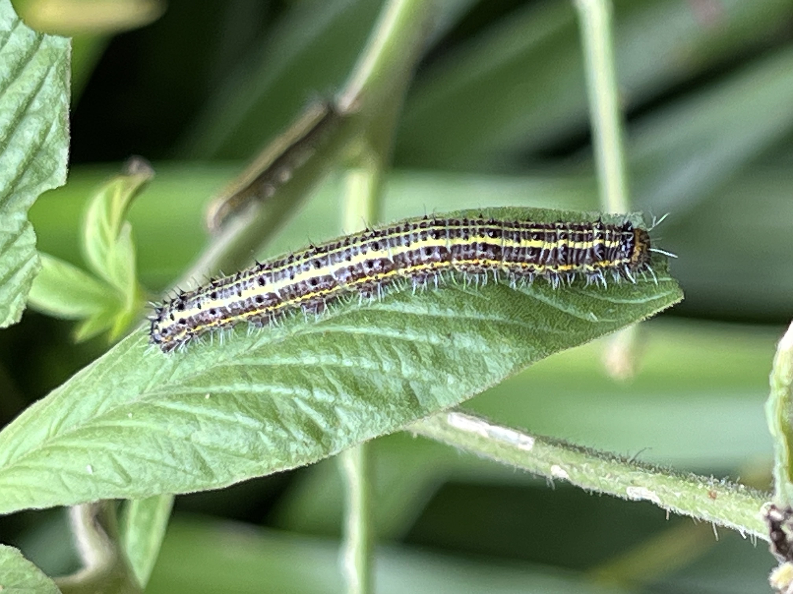
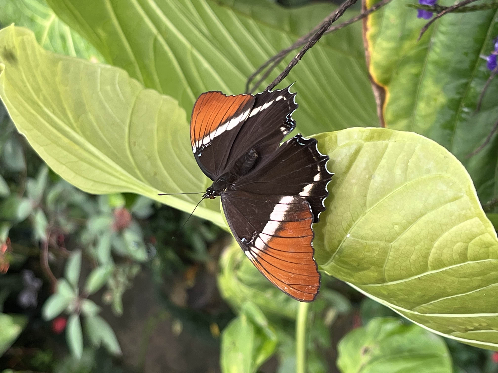
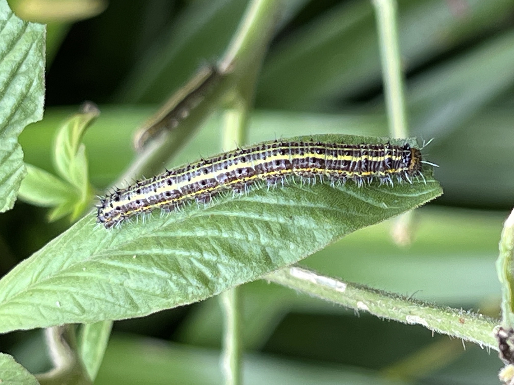
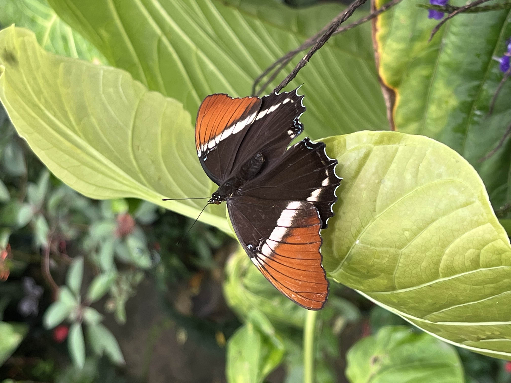
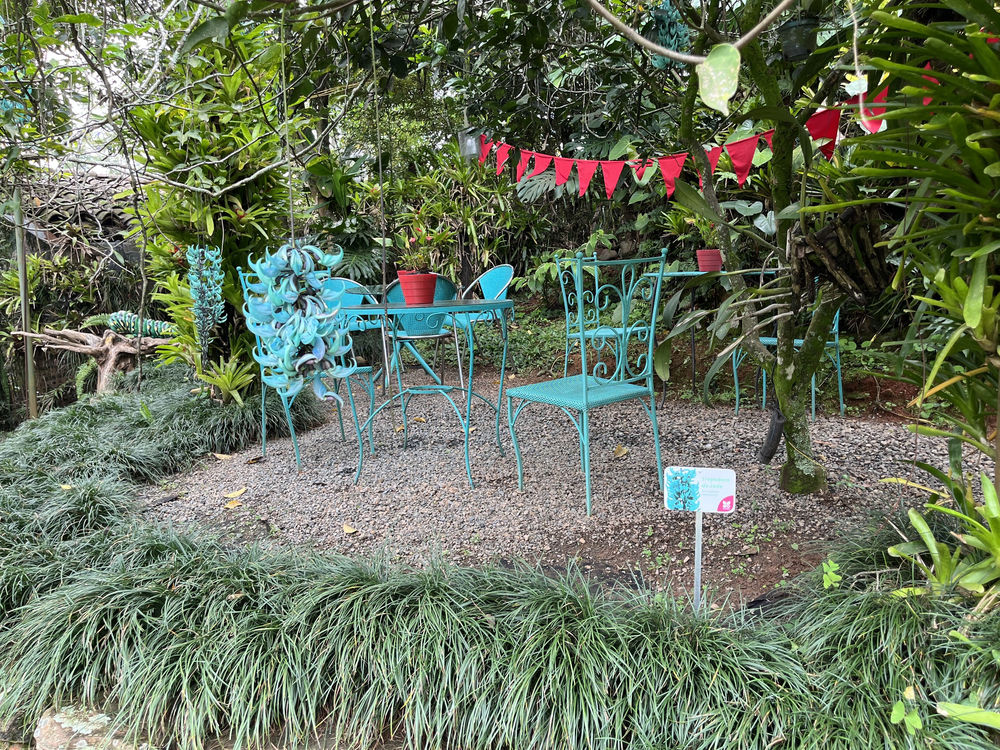
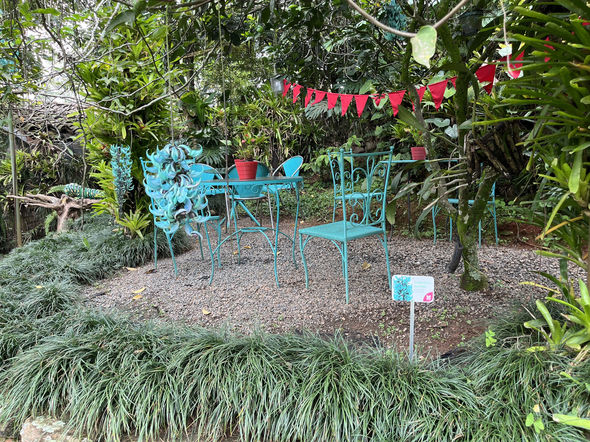

HISTORIA DE LA MARIPOSA
Las mariposas han existido duranta mas de 200 millones de años, evolucionando a partir de polillas antiguas. Su variedad en diversidad comenzó hace unos 140 millones de años, ajustándose junto a la aparición de las plantas con flores, con lo cual, les proporcionaron néctar y se transformaron en un elemento clave en su evolución. Sus alas, están decoradas con patrones y colores característicos. Esto les brinda la capacidad de camuflarse o simular a otras especies para protegerse. A través de la historia han sido símbolos significativos para diferentes culturas, para los aztecas las tenían en cuenta con guerreros caídos, para la cultura griega representaban el alma, en china, simboliza el amor eterno. En una cultura mas general, simbolizan la transformación debido a su increíble cambio por medio de sus etapas, como lo es pasar de oruga a mariposa. En estos tiempos, hay mas de 18.000 especies, pero muchas de ellas se ven amenazadas debido al cambio climático y por ende la destrucción de su lugar de hábitat. La mariposa es una fuente de inspiración en la naturaleza, ciencia y para el ingenio humano.
A continuación se observa el paso a paso de su ciclo de vida.
 



HISTORIA DEL MARIPOSARIO DE ANDOKE
El Mariposario de Andoke fue fundado en 2009 por una pareja interesada en la conservación del medio ambiente. Su objetivo principal es promover la educación ambiental y la conciencia sobre la importancia de la biodiversidad, con un enfoque particular en las mariposas. Andoke ha sido reconocido por su trabajo en la conservación de la naturaleza y ha recibido premios como el Premio Mobil para la protección de la biodiversidad de Colombia. En 2021, el Ministerio de Ciencia, Tecnología e Innovación de Colombia reconoció a Andoke como un Centro de Ciencia, destacando su contribución a la educación ambiental y la conservación. Además, cuenta con un mariposario que alberga más de 15 especies nativas de mariposas, un mapa temático de Colombia de 2.000 m² y senderos ecológicos que permiten a los visitantes conectarse con la naturaleza
 
